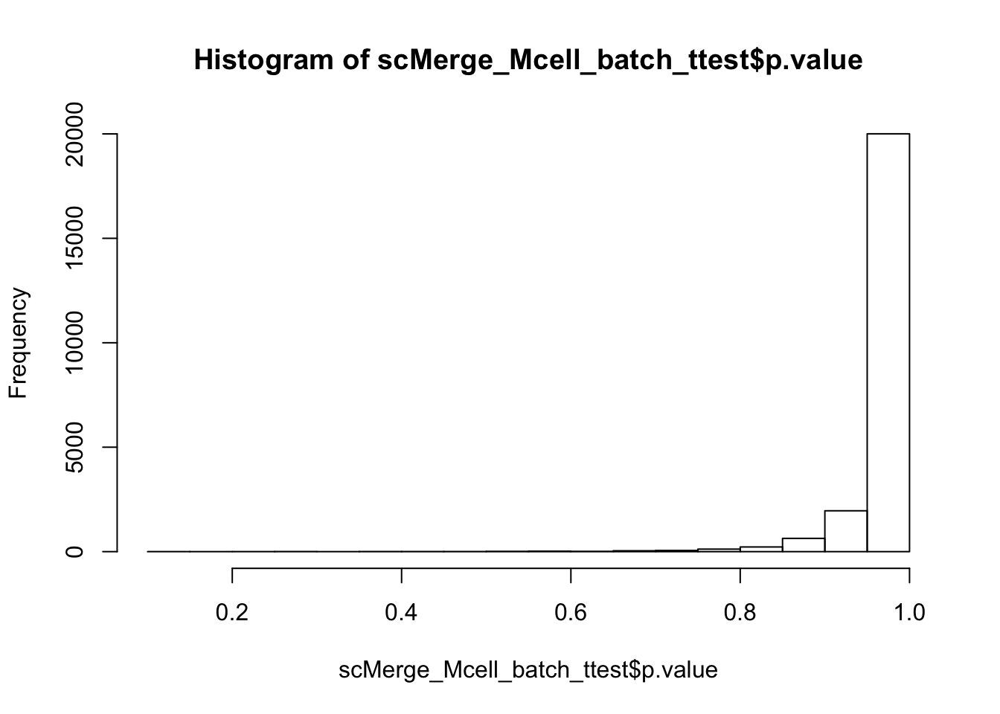

Downstream analysis
Sydney Precision Bioinformatics Group
03/05/2019
As discussed in 3rd May 2019, Kevin will work on this part of the workshop.
Kevin can only work on this if he is instructed by Jean/Kitty/Pengyi what downstream analysis (even if it is DE, I need to know what comparisons) to show. If Yingxin has already worked on this, then some code should be posted here.
## Loading required package: SummarizedExperiment## Loading required package: GenomicRanges## Loading required package: stats4## Loading required package: BiocGenerics## Loading required package: parallel##
## Attaching package: 'BiocGenerics'## The following objects are masked from 'package:parallel':
##
## clusterApply, clusterApplyLB, clusterCall, clusterEvalQ,
## clusterExport, clusterMap, parApply, parCapply, parLapply,
## parLapplyLB, parRapply, parSapply, parSapplyLB## The following objects are masked from 'package:stats':
##
## IQR, mad, sd, var, xtabs## The following objects are masked from 'package:base':
##
## anyDuplicated, append, as.data.frame, basename, cbind,
## colnames, dirname, do.call, duplicated, eval, evalq, Filter,
## Find, get, grep, grepl, intersect, is.unsorted, lapply, Map,
## mapply, match, mget, order, paste, pmax, pmax.int, pmin,
## pmin.int, Position, rank, rbind, Reduce, rownames, sapply,
## setdiff, sort, table, tapply, union, unique, unsplit, which,
## which.max, which.min## Loading required package: S4Vectors##
## Attaching package: 'S4Vectors'## The following object is masked from 'package:base':
##
## expand.grid## Loading required package: IRanges## Loading required package: GenomeInfoDb## Loading required package: Biobase## Welcome to Bioconductor
##
## Vignettes contain introductory material; view with
## 'browseVignettes()'. To cite Bioconductor, see
## 'citation("Biobase")', and for packages 'citation("pkgname")'.## Loading required package: DelayedArray## Loading required package: matrixStats##
## Attaching package: 'matrixStats'## The following objects are masked from 'package:Biobase':
##
## anyMissing, rowMedians## Loading required package: BiocParallel##
## Attaching package: 'DelayedArray'## The following objects are masked from 'package:matrixStats':
##
## colMaxs, colMins, colRanges, rowMaxs, rowMins, rowRanges## The following objects are masked from 'package:base':
##
## aperm, apply, rowsum##
## Attaching package: 'dplyr'## The following object is masked from 'package:matrixStats':
##
## count## The following object is masked from 'package:Biobase':
##
## combine## The following objects are masked from 'package:GenomicRanges':
##
## intersect, setdiff, union## The following object is masked from 'package:GenomeInfoDb':
##
## intersect## The following objects are masked from 'package:IRanges':
##
## collapse, desc, intersect, setdiff, slice, union## The following objects are masked from 'package:S4Vectors':
##
## first, intersect, rename, setdiff, setequal, union## The following objects are masked from 'package:BiocGenerics':
##
## combine, intersect, setdiff, union## The following objects are masked from 'package:stats':
##
## filter, lag## The following objects are masked from 'package:base':
##
## intersect, setdiff, setequal, unionSC3
library(SC3)
rowData(sce_scMerge)$feature_symbol = rownames(sce_scMerge)
table(sce_scMerge$cellTypes) %>% length
sce_clust <- sc3(sce_scMerge, ks = 8, biology = TRUE, n_cores = 4)
sc3_interactive(sce_clust)monocle
library(monocle)
rowData(sce_scMerge) = DataFrame(ensemblGeneID = rownames(sce_scMerge))
expressed_genes = rowMeans(SingleCellExperiment::counts(sce_scMerge) == 0)
hist(expressed_genes)
sce_scMerge_monocle = scran::convertTo(
sce_scMerge,
type = "monocle",
assay.type = "logcounts",
col.fields = c("cellTypes", "stage", "batch")) %>%
estimateSizeFactors()
diff_test_res <- differentialGeneTest(
sce_scMerge_monocle[expressed_genes < 0.1], fullModelFormulaStr = "~stage+cellTypes")
ordering_genes <- row.names(subset(diff_test_res, qval < 0.01))
sce_scMerge_monocle <- setOrderingFilter(sce_scMerge_monocle, ordering_genes)
sce_scMerge_monocle = estimateDispersions(sce_scMerge_monocle)
plot_ordering_genes(sce_scMerge_monocle)
sce_scMerge_monocle <- reduceDimension(sce_scMerge_monocle, max_components = 2,
method = 'DDRTree')
sce_scMerge_monocle <- orderCells(sce_scMerge_monocle)
plot_cell_trajectory(sce_scMerge_monocle, color_by = "stage")t-test
library(genefilter)##
## Attaching package: 'genefilter'## The following objects are masked from 'package:matrixStats':
##
## rowSds, rowVarstable(sce_scMerge$cellTypes)##
## Endothelial Cell Hepatoblast Mesenchymal Cell cholangiocyte
## 52 437 178 103
## Epithelial Cell Hematopoietic Immune cell Stellate Cell
## 48 180 17 19sce_scMerge_Mcell = sce_scMerge[,sce_scMerge$cellTypes == "Hepatoblast"]
logcounts_Mcell = logcounts(sce_scMerge_Mcell)
scMerge_Mcell = assay(sce_scMerge_Mcell, "scMerge_supervised")
logcounts_Mcell_batch_ttest = rowFtests(logcounts_Mcell,
fac = factor(sce_scMerge_Mcell$batch))
scMerge_Mcell_batch_ttest = rowFtests(scMerge_Mcell,
fac = factor(sce_scMerge_Mcell$batch))
hist(logcounts_Mcell_batch_ttest$p.value)
hist(scMerge_Mcell_batch_ttest$p.value)